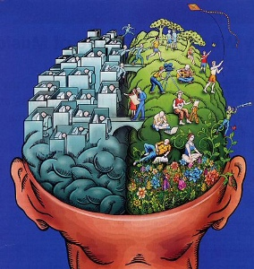

Votre navigateur ne supporte pas ce document et la technologie qui est utilisée.
Pour une utilisation optimale, veuillez utiliser Chrome, Safari ou Firefox.
Projet de Motivation
Ariane
Décidée, elle l’était indéniablement. Un bilan professionnel lamentable et l’approche de la trentaine contribuaient probablement à ce revirement particulièrement inattendu. Interface3 allait lui permettre d’appréhender un tournant important de sa vie.
Elle avait déjà eu recours à diverses applications informatiques dans le cadre de ses études, notamment la suite Office et SPSS, et elle en utilisait parfois d’autres lors de ses loisirs.
Sans grand talent.
Crokett pour Shah
Mais toujours avec imagination.
Il était donc plus que temps de se donner les moyens d’exploiter ses possibles qualités cachées.
Elle avait cru en ses capacités d’écoute, de compréhension et d’aide à autrui et y croyait toujours. Psychologue, elle le serait un jour. Cette formation n’était aucunement incompatible avec ses ambitions anciennes, que du contraire.
Elle y puiserait les moyens d’innover et de se réaliser dans des domaines dont elle n’entrevoyait, jusque-là, que les prémisses. Le module d’orientation lui avait fait prendre conscience qu’elle en était tout à fait capable
Et qu’elle pouvait s’amuser en apprenant.
Pour préciser ses attentes, elle s’était mise en quête de témoignages de webmasters.
<- Un programmeur et un webdesigner ->

Dont les ressentis se sont finalement avérées plus proches qu’elle ne l’aurait cru.
Outre la gestion du stress généré par la nécessité de traiter plusieurs projets de front, l’un comme l’autre se doivent d’être aptes à gérer les attentes et besoins de leurs clients. Ajoutons la nécessaire capacité d’adaptation aux mises à jours et nouvelles technologies afin d’éviter l’obsolescence, ainsi qu’une certaine liberté de création, et nous obtenons la formule de base du travail de webmaster.
Au programmeur de préciser que la programmation est une sorte de jeu dont la logique et le type de syntaxe se retrouvent d’un langage de programmation à l’autre. L’apprentissage d’un seul langage permet d'acquérir les bases pour aborder les autres.
Au webdesigner d’ajouter que son métier requiert de la polyvalence puisque chaque site est unique. Maîtriser Photoshop, Illustrator, Dreamweaver et Flash ne suffit pas : Il faut être capable d’avoir une vision d’ensemble pour que le résultat soit harmonieux.
A priori, elle se sentait plus proche du programmeur. L’avenir lui dirait si elle avait vu juste.